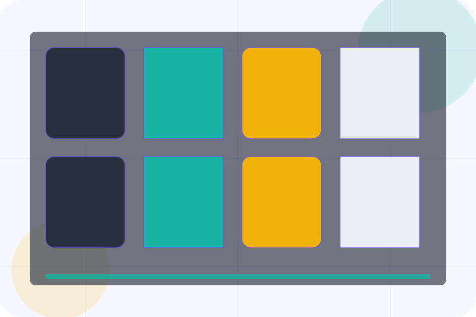
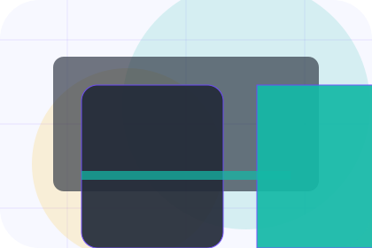

Pricing / 01
Pricing by Vow
Pricing shaped for events, weddings & experience production decisions.
Pricing opens as a clear events decision hub: what Vow offers, who it helps, why it matters, and which route to take first.
The first screen combines positioning, proof, primary action, and fast internal navigation, so people can act immediately or compare the rest of the pricing route with context.
Check availabilityPlan the visitReserve with context
Event card hero
Plan the date
Select the closest route and Vow keeps the next step, proof, and follow-up expectation aligned with emotion and confidence.

Pricing / 02
Packages
Packages makes commercial comparison easier by showing fit, scope, and terms before events visitors ask for the next step.
The layout keeps price-sensitive decisions honest: it separates starting scope, fuller delivery, and ongoing support so the visitor can ask a sharper question.
View Pricing
Fit
Who the offer is for, which scope it suits, and when a different route may be better.
Scope
What is included clearly enough for events, weddings & experience production visitors to compare value without hidden jargon.
Terms
The practical details that should be confirmed before someone asks to enquire about a date.
Entry
Who the offer is for, which scope it suits, and when a different route may be better.
ScopedStay
What is included clearly enough for events, weddings & experience production visitors to compare value without hidden jargon.
QuotedPrivate
The practical details that should be confirmed before someone asks to enquire about a date.
RetainerPricing / 03
Custom
Custom makes commercial comparison easier by showing fit, scope, and terms before events visitors ask for the next step.
The layout keeps price-sensitive decisions honest: it separates starting scope, fuller delivery, and ongoing support so the visitor can ask a sharper question.
Explore PricingFit
Who the offer is for, which scope it suits, and when a different route may be better.
Scope
What is included clearly enough for events, weddings & experience production visitors to compare value without hidden jargon.
Terms
The practical details that should be confirmed before someone asks to enquire about a date.
Pricing / 04
Addons
Addons makes commercial comparison easier by showing fit, scope, and terms before events visitors ask for the next step.
The layout keeps price-sensitive decisions honest: it separates starting scope, fuller delivery, and ongoing support so the visitor can ask a sharper question.
Explore PricingFit
Who the offer is for, which scope it suits, and when a different route may be better.
Pricing / 05
Deposits
Deposits makes commercial comparison easier by showing fit, scope, and terms before events visitors ask for the next step.
The layout keeps price-sensitive decisions honest: it separates starting scope, fuller delivery, and ongoing support so the visitor can ask a sharper question.
Explore PricingFit
Who the offer is for, which scope it suits, and when a different route may be better.
Scope
What is included clearly enough for events, weddings & experience production visitors to compare value without hidden jargon.
Terms
The practical details that should be confirmed before someone asks to enquire about a date.
Pricing / 06
Inclusions
Inclusions makes commercial comparison easier by showing fit, scope, and terms before events visitors ask for the next step.
The layout keeps price-sensitive decisions honest: it separates starting scope, fuller delivery, and ongoing support so the visitor can ask a sharper question.
Explore Pricing- 01
Fit
Who the offer is for, which scope it suits, and when a different route may be better.
- 02
Scope
What is included clearly enough for events, weddings & experience production visitors to compare value without hidden jargon.
- 03
Terms
The practical details that should be confirmed before someone asks to enquire about a date.
Pricing / 07
Payment
Payment makes commercial comparison easier by showing fit, scope, and terms before events visitors ask for the next step.
The layout keeps price-sensitive decisions honest: it separates starting scope, fuller delivery, and ongoing support so the visitor can ask a sharper question.
Explore PricingFit
Who the offer is for, which scope it suits, and when a different route may be better.
Scope
What is included clearly enough for events, weddings & experience production visitors to compare value without hidden jargon.
Terms
The practical details that should be confirmed before someone asks to enquire about a date.
Pricing / 08
Terms
Terms makes commercial comparison easier by showing fit, scope, and terms before events visitors ask for the next step.
The layout keeps price-sensitive decisions honest: it separates starting scope, fuller delivery, and ongoing support so the visitor can ask a sharper question.
Explore PricingFit
Who the offer is for, which scope it suits, and when a different route may be better.
Pricing / 09
Quote
Quote converts customer proof into a useful buying signal: the problem, the experience, and what changed afterward.
Proof stays believable by focusing on situation, service experience, and practical change rather than vague praise or unsupported results.
Enquire DateSituation
What the visitor needed before choosing Vow, written with enough context to feel real.
Experience
How the service, product, or support felt during the process, not just that it was good.
Change
What became easier to decide, complete, buy, book, or trust after the interaction.
Pricing / 10
Enquire Date
Vow closes the pricing route with a clear action, a quick reminder of the value, and a low-friction way to enquire about a date.
Visitors who are ready can use the primary action. Visitors who are still comparing can scan the section links, proof, and support routes before they enquire about a date.
Enquire DateThe final block keeps the choice simple: act now, compare one more proof route, or send enough detail for a focused response.
Enquire Dateemotion and confidence
Enquire Date
An events site with elegant event cards, date filters, host proof, and RSVP-style enquiry. Pricing ends with a direct path to enquire about a date, plus enough context for visitors who still need to compare.
Notes
Availability, supplier pricing, venue access, and weather plans must be confirmed before contract.